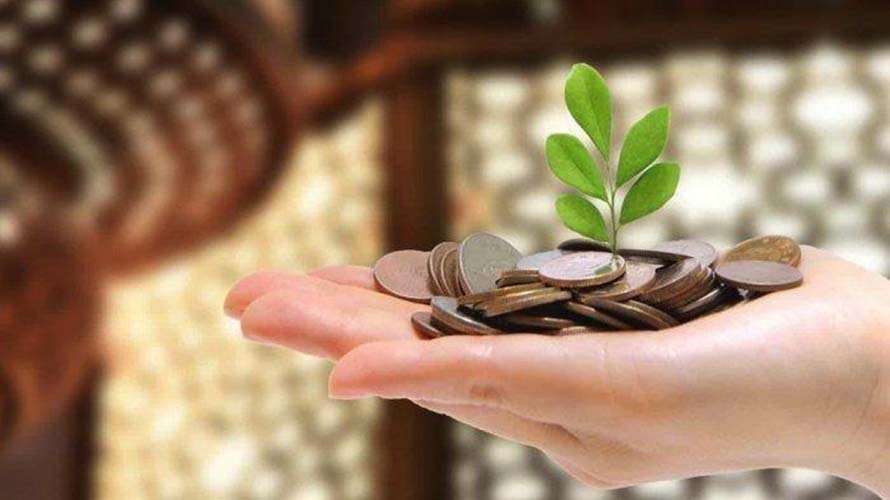
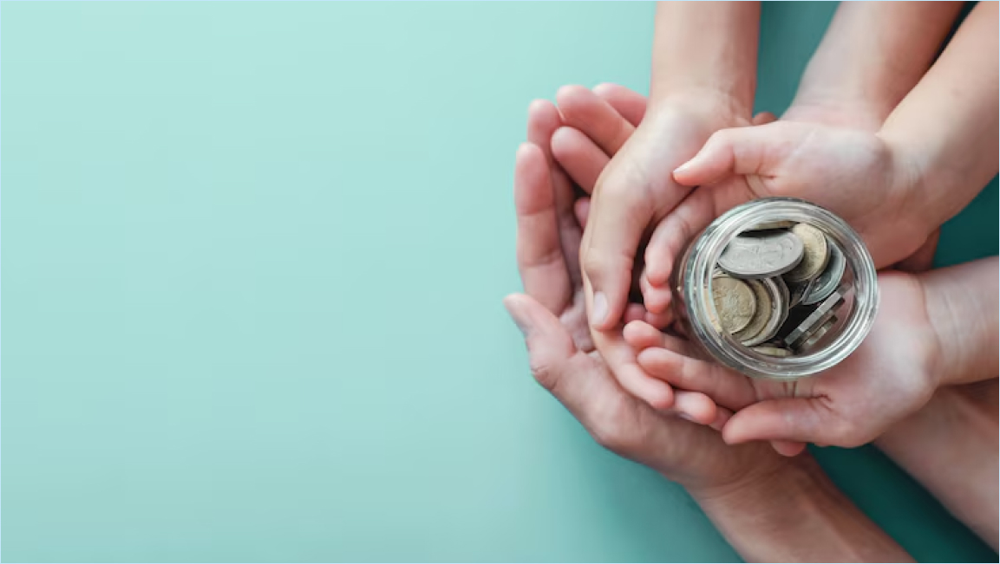

081214135059

Menghapus
Bersedekah dapat menghapus dosa-dosa kita dan membersihkan jiwa kita. Maknanya, dengan bersedekah, kita dapat memperoleh ampunan dan pengampunan dari Allah SWT.

Membawa
Bersedekah dapat membawa kita kepada kebahagiaan dan kesuksesan di dunia dan akhirat. Maknanya, dengan bersedekah, kita dapat memperoleh berkah dan perlindungan dari Allah SWT.

Berkah
Bersedekah dapat membawa berkah dan kebaikan kepada kita dan orang lain. Maknanya, dengan bersedekah, kita dapat memperoleh kebahagiaan dan kesuksesan yang sejati, serta dapat membantu orang lain untuk memperoleh kebahagiaan dan kesuksesan juga.